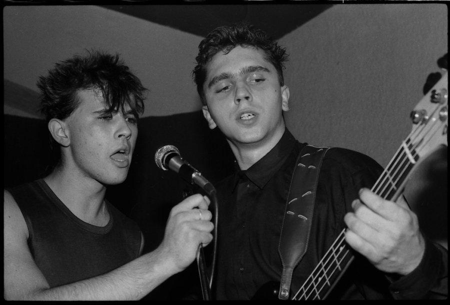

Let 3 je hrvatski rock sastav iz Rijeke osnovan 1987. godine.
Damir Martinović Mrle i Zoran Prodanović Prlja zajedno s odabranom ekipom riječkih glazbenika utemeljuju u veljači 1986. g. grupu "Let 2" no u kratkom vremenu mijenjaju naziv u "Let 3" i objavljuju dvije pjesme na kompilaciji "Rijeka – Pariz – Texas".

LET 2 - Zoran Prodanović Prlja i Damir Martinović Mrle
Sastav je od početka djelovanja pratila osobita pažnja onoga dijela rock poklonika koji su odmah bili očarani jedinstvenim scensko-glazbenim kvalitetama Riječana. Krug štovatelja stalno se širio, a ubrzo je javnost postajala svjesna da Let 3 nisu samo bizarni, bučni čudaci nego prvorazredna rock atrakcija i zaista unikatna umjetnička pojava. Nakon početne fascinacije onime u čemu je Let 3 doista neponovljiv (fantastičan image i sceničnost) postajale su vidljivije i ostale kvalitete sastava – izuzetni tekstovi, uvijek perfektan izvođački nivo te dramaturška i stilska dorađenost koncerata i javnih istupa općenito.
Glazbena specifičnost, iz osnova indie frenetičnosti, razvijena je do izuzetne rafiniranosti, uvijek praćene specifičnim humorom i osjećajem za bizarno. Let 3 nikada nisu parodirali, komentirali ili negirali, bilo svoj glazbeni, socijalni ili politički okoliš, kao što mu nisu ni povlađivali.
Prvi album objavljuju 1989. godine - "Two Dogs Fu**ing", žestoki i za njihove poklonike već mitski, na kojem su pjesme kao što su himna "Izgubljeni", "Sam u vodi", "Ne trebam te" i "U rupi od smole".
Drugi album, "El Desperado", objavljuju u prosincu 1991. godine. Na ploči su obrada "Vjernog psa", "F**k Famiglia", "Ha ha ha", "Pokvarena žena" i "Mona". Vrijeme između dva albuma i nakon "El Desperada" Let 3 popunili su gotovo neprekidnim turnejama koje su, osim Hrvatske, uključivale i nastupe po Sloveniji, Austriji, Francuskoj, Italiji, Mađarskoj, Španjolskoj, Grčkoj i Alžiru.
U proljeće 1994. sastav se seli na imanje Blue Moon pokraj mjesta Hum u Istri gdje u pastoralnom ugođaju stvaraju album "Peace" koji je donio nove hitove: "Kontinentio", "Nafta", "Droga" i "Elefante Elettrico" i inaugurirao osobit način rada na hrvatskoj sceni. Na turnejama koje su uslijedile snima se materijal za koncertnu ploču tipičnog naziva "Živi k**ac" koja je objavljena u ljeto 1996. Ovaj dvostruki album jedan je od najkvalitetnijih radova uživo domaće popularne glazbe.
Sastav u travnju 1996. počinje rad na predstavi "Fedra" Ivice Buljana. Angažman domaćih rockera u kazalištu nije ništa novo, ali do "Fedre" niti jedan sastav nije bio toliko eksponiran u izvedbi jedne predstave u kojoj je bio praktično centralna pojava. Slobodno se može reći da je "Fedra" jedna od najuspješnijih hrvatskih predstava što potvrđuju njena brojna gostovanja u Španjolskoj, Italiji, Sloveniji, Grčkoj, Makedoniji i Venezueli, ali i njezin već kultni status. Angažman Leta 3 nagrađen je nagradom Hrvatskog glumišta te Porinom za najbolju kazališnu glazbu ("Pipi"). Ono što se pritom pokazalo, a kasniji angažman Prlje u predstavi "Pilad" potvrdio, jest "prirodna" bliskost Leta 3 s kazalištem u kojem njihova izrazita sceničnost funkcionira gotovo jednako dobro kao na koncertima.
U rujnu 1997., izlazi i dotad najdrastičniji koncept sastava - album "Nečuveno". Svojevrsnoj provokaciji moglo se pronaći slične prethodnike u povijesti glazbe dvadesetog stoljeća no to je vjerojatno jedini glazbeni proizvod na kojemu nema baš ničega (ni snimljene tišine), a kojega je kupilo 350 štovatelja. Preciznije, proizvod je sadržavao umjetničku viziju sastava koja je komade plastike označila serijskim brojevima, opremila omotom i prekrstila ih u album "Nečuveno" sastava Let 3. Početkom 1998. Let 3 mijenja postavu u onu najdugovječniju: Damir Martinović – Mrle (bas), Zoran Prodanović – Prlja (vokal), Ivan Šarar (elektronika), Dražen Baljak – Baljak (gitara, mandolina), Matej Zec – Knki (gitara) i Branko Kovačić – Husta (bubnjevi). Sastav snima novi album Jedina, praćen entuzijazmom i oduševljenjem svih sudionika, gostiju, "tehničkog osoblja", ljudi iz medija i slučajnih namjernika. Riječ o njihovom najkvalitetnijem uratku na kojem su najfinije izbrušene sve njihove kvalitete. Slijedi album "Bombardiranje Srbije i Čačka" koji je objavljen 2005. – kao unikatan spoj naizgled nespojivog – rocka, etna, narodnjaka, trasha, ex-YU sweetpopa osamdesetih, elektronike, drum'n' bassa i nu metal prangijanja. Povodom dvadesetog rođendana, Let3 20. prosinca 2008. objavljuje DVD "Živa p**ka".
DVD je objavljen i u ekskluzivnom ograničenom izdanju u obliku kutije bombonijere s rekvizitima – suvenirima koji su sastav vjerno pratili ovih godina. Kritike su odlično prihvatile ovaj glazbeni uradak, ali i mnoge medijske kontroverze, posebice nastup Damira Martinovića i Zorana Prodanovića u emisiji Aleksandra Stankovića Nedjeljom u 2 na HTV-u.

Gostovanje Leta 3 u emisiji Nedjeljom u 2
"Pucanje čepova"
2009. g. bend je na vinilu ponovno izdao svoja prva dva legendarna i po mnogim kritičarima najbolja ex-Yu alter-rock albuma, "Two Dogs Fu**in'" i "El Desperado" te ih popratio serijom od čak sedam rasprodanih ekskluzivnih "koncerata u rupi", koji su digli Rijeku na noge. Povratak u prošlost vlastitog zvuka bio je i povratak na mjesto koje je ishodište za svaki punokrvni rock band – vlastitu prostoriju za vježbanje. 2010. godine grupa se drugi put vraća na kazališne daske u kontroverznoj satirskoj igri Kiklop, u režiji Ivice Buljana. Predstava je uzburkala hrvatsku javnost popraćena velikim odobravanjem jednog dijela publike, ali i velikim negodovanjem drugog, tako služeći kao već dobro poznati lakmus papir hrvatskom društvu. No to je ionako "letovska" uloga već duži niz godina. Kiklop je osvojio Grand Prix za najbolju predstavu na Festivalu malih scena u Rijeci 2011.
2013. g. Let 3 izbacuje album "Ku**em do vjere/ Thank You Lord" i to na ponovno oživljenom formatu vinila, na kojem se uz nove uratke nalaze i uglazbljeni songovi iz predstave Kiklop predvođeni velikim hitom "Omađijaj Me" i pratećim spotom u režiji Radoslava Jovanova Gonza. U njemu se podcrtava i ismijava hrvatska politička stvarnost. Iste godine izlazi i album Let 2 "Punjeta", iz faze benda pod imenom Let 2 obogaćeni novom verzijom pjesme "Punjeta".
2016. godine Let 3 objavljuje dugo očekivani i trenutno aktualni album "Angela Merkel sere" popraćen rasprodanim najavnim koncertima u Zagrebu i Rijeci.